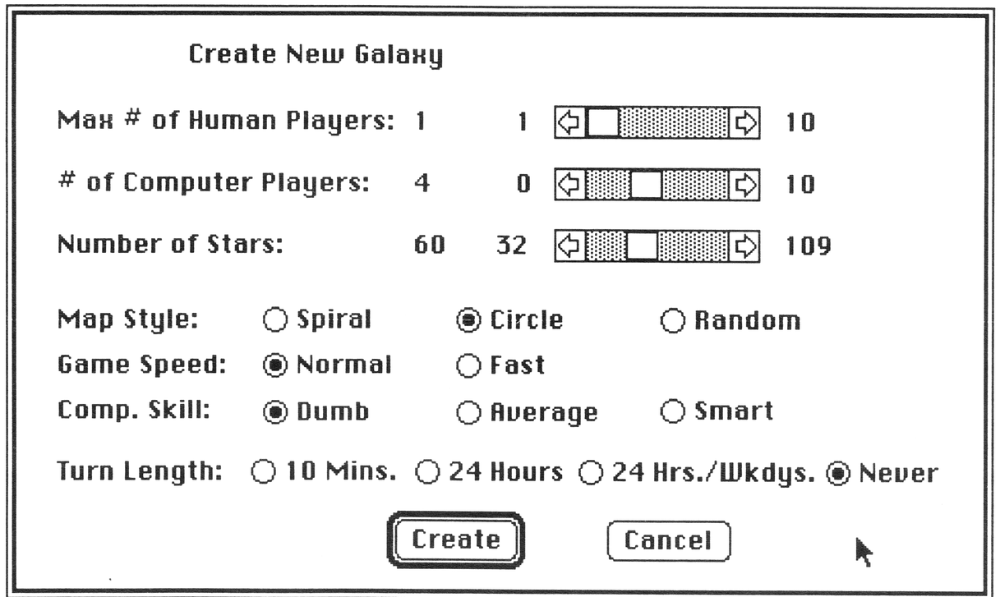

Setting Up a New Galaxy
The first thing to do in a game of Spaceward Ho! is create a new galaxy. You’ll have to decide how many players to play against, how good they’ll be, how big the galaxy is, and things like that. I’ll cover some of the options here.
The Max number of human players is for use in a multi-player game. You’ll want to set it to 1 if you’re playing alone. If there are several players, make sure that the maximum you choose now is large enough for everyone to join in. Also note that new players can’t join after two turns have been processed.
The number of computer players is pretty obvious: It’s the number of enemies that will occupy the galaxy with you. The more there are, the more resistance you’ll find.
The number of stars determines how big the galaxy is. The bigger the galaxy, the more room there is for each player to roam. In a very small galaxy with a lot of players, the game will tend to be very heated and fast. In a large galaxy with only a few players, the game will develop for a long time before there’s any combat.
The Map Style determines what general shape the Galaxy will have. Spiral galaxies tend to be the most even starts, with each player having an arm of the spiral to himself. Circle galaxies also start players off fairly evenly, buy the start is more random than that of the spiral. A Random galaxy has stars tossed down higgledy-piggledy, and can start any player out in an extremely good or bad position.

The Game Speed determines the pace of the game. In a fast game, each planet will make a lot more money, so you build ships much faster. Furthermore, the home planets start out with more metal. The main difference is in the number of planets you can colonize at a time. In the Normal game, that number is one, at least at the beginning. In the Fast game, you can often initially colonize five or more planets, which makes expansion much more rapid.
We find the Normal game more interesting, since you have to constantly make decisions about how far to expand, and how fast. In the fast game, it is often best to simply expand as quickly as possible, no matter what. However, you have a better hope of finishing a fast game in a couple of hours.
The Computer Skill determines how hard a game the computer players will give you. Smarter players will learn from their mistakes, will build larger fleets, will invest more heavily in Technology, and will expand faster.
At first, even the Dumb computer players will prove to be very difficult opponents, but as your skill grows, you’ll find them unchallenging. Eventually, you may be able to defeat the Advanced players consistently. If so, give us a call and we’ll send you information on upgrades, as we will probably have improved the computer’s intelligence.